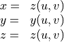
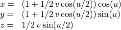

3D Plotting¶
Overview¶
GSL shell offer, since the release 1.0, the possibility of making three dimensional plots and animations. The module for this kind of plots is based on the Pre3d JavaScript library of Dean Mc Namee.
The 3D plotting functions works by creating a Plot object and is therefore fully compatible with all the standard operations used for 2D graphics.
The functions for 3D plotting are defined in the module plot3d.
Warning
While this module is fully functional it does have some major limitations you should be aware of:
the module is not suitable for complex 3D graphics with a lot of polygons
the memory usage is quite important and if you perform plots with many meshes you may note an important usage of memory
the rendering speed is quite slow for scene with many polygons
In future we may change the implementation of the 3D plotting module in order to have a more efficient implementation.
3D Function Plot¶
The 3D Function Plot give you the possibility of making a 3D plot of a function of the form z = f(x, y) over a rectangular domain. Here the description of the function:
- graph.plot3d(f, xmin, ymin, xmax, ymax[, options])¶
Make a 3D plot of the function
f(x, y)over the rectangular domain defined byxmin,ymin,xmaxandymax.The
optionsargument is an optional table that can contain the following field:gridx, number of subdivision along xgridy, number of subdivision along ytitle, the title of the plotstroke, a boolean value that indicate if the wireframe should be drawn or not.
Here a simples example:
import 'math'
require 'plot3d'
f = |x, y| sin(x)*exp(-x^2-y^2)
graph.plot3d(f, -3, -3, 3, 3, {title= '3d plot'})
and here the plot that you will obtain:
Parametric Surface Plot¶
The Parametric Surface Plot function allow the plotting of a 3D surface defined in the parametric form:

where u and v are two parameters that span a rectangular domain.
- graph.surfplot({x, y, z}, umin, vmin, umax, vmax[, options])¶
Make a 3D plot of the parametric surface defined by the functions
x(u, v),y(u, v)andz(u, v)when the parameters(u, v)span a rectangular domain defined byumin,vmin,umaxandvmax.The
optionsargument is an optional table that can contain the following field:gridu, number of subdivision along xgridv, number of subdivision along ytitle, the title of the plotstroke, a boolean value that indicate if the wireframe should be drawn or not.
Here a simples example that plot the Moebius surface starting from a parametric: form:

here the code to produce the plot:
import 'math'
require 'plot3d'
x = |u,v| (1 + 1/2 * v *cos(u/2))*cos(u)
y = |u,v| (1 + 1/2 * v *cos(u/2))*sin(u)
z = |u,v| 1/2 * v * sin(u/2)
graph.surfplot({x, y, z}, 0, -1, 2*pi, 1, {gridu= 60, gridv= 4, stroke= true})
and here an image of the resulting plot: